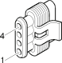

K15 Lambda sensor on pre-catalyzer ( ENGINE )
- Path
- Electrical equipment > Connectors > K Sensors and sender units > K15 Lambda sensor on pre-catalyzer > K15 Lambda sensor on pre-catalyzer ( ENGINE )
- Kind
- connector pinout (pin -> wire colour -> other end)
- Applies to
- engines: 2.5 V6, 3.2 V6, 1.9 JTD 8v , 2.4 JTD 10v; production: da 02/01 a 02/02, da 03/02 a 09/03, da 10/03
- Interactive page
- https://sloeber94.github.io/elrnDB-a156/en/#/3236468
Applies to: engines: 2.5 V6, 3.2 V6, 1.9 JTD 8v , 2.4 JTD 10v; production: da 02/01 a 02/02, da 03/02 a 09/03, da 10/03

Wiring | Colour |
|---|---|
NERO (black) |